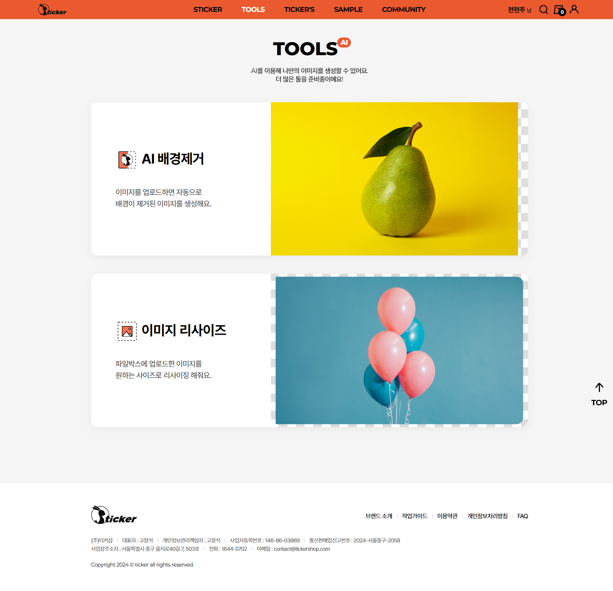
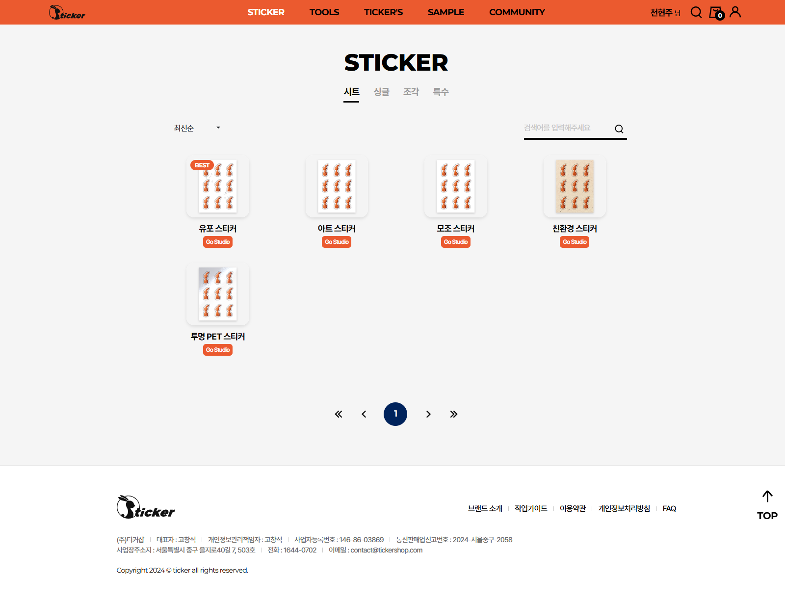
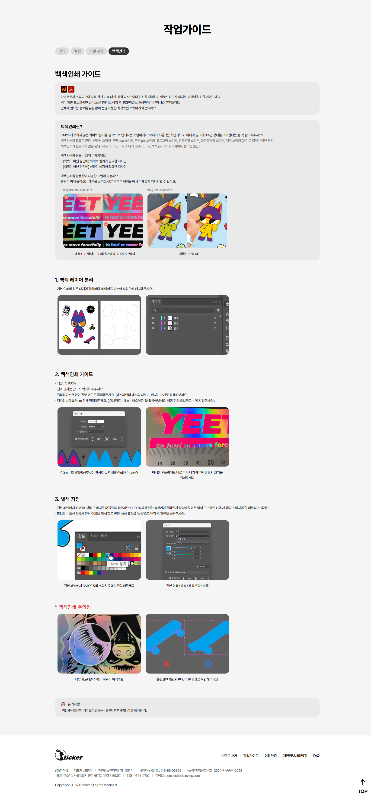
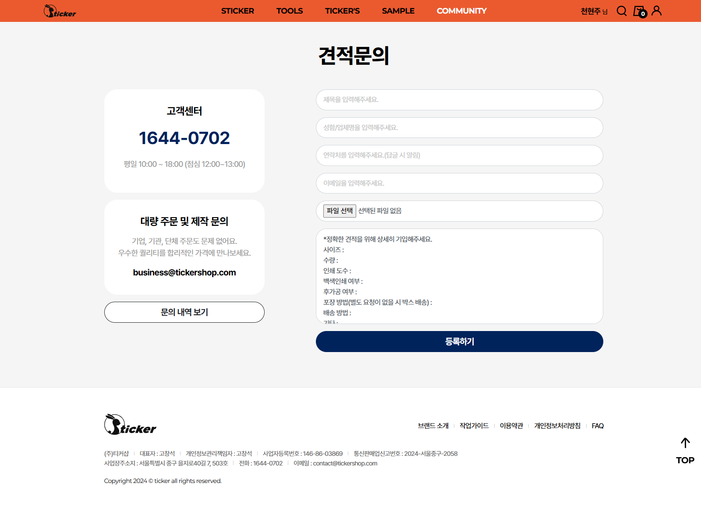
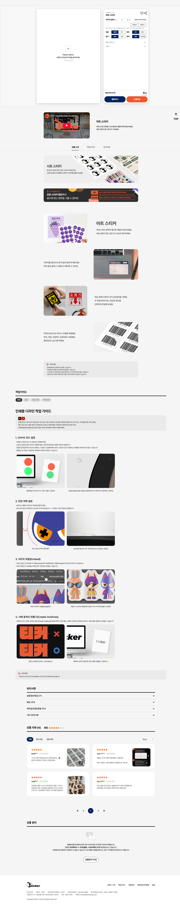
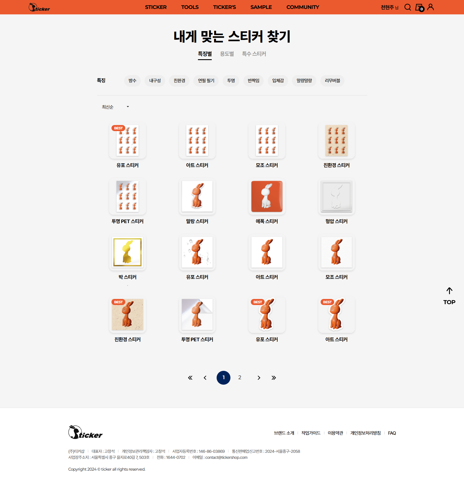

TICKER
- YEAR
- 11 2024
- DURATION
-
- 1 weeks of production
- 3 days of maintenance
- FIELDS
-
- PUBLISHING
- MARKUP
- CMS
- VS
- HOW I WORKED ON IT
-
TICKER는 개성있는 스티커 제품을 중심으로 일상 속 작은 즐거움을 제안하는 브랜드입니다. 브랜드의 톤앤매너를 유지하면서도 제품의 매력을 직관적으로 전달할 수 있는 자사몰 구축을 목표로 진행된 프로젝트입니다.
#OVERVIEW
해당 프로젝트는 단독으로 진행한 퍼블리싱 작업으로, 전달받은 디자인 시안을 기반으로 주요 페이지를 구현했습니다.
밝고 여백감 있는 레이아웃과 간결한 인터랙션을 통해 브랜드의 미니멀하고 유쾌한 분위기가 강조됩니다.
상품 리스트와 상세페이지를 비롯해 전체적인 퍼블리싱 구조를 담당했습니다.
#CLIENT_NEEDS
다양한 제품과 디자인을 통해 브랜드의 매력을 직관적으로 전달하고,
단순한 쇼핑 경험을 넘어 브랜드와의 친밀감을 자연스럽게 형성하는 것을 목표로 삼았습니다.
이를 통해 TICKER는 친근하면서도 품질과 가치를 느낄 수 있는 브랜드로 자리매김하도록 진행되었습니다.
일상 속에서도
브랜드가 가진 제품의
품질과 가치를 직관적으로
불필요한 요소 없이
디자인과 기능, 구매 경험
본질에 집중할 수 있는
쉽고 즐겁게
직관적인 UI를 활용하여
활기찬 브랜드 이미지를 강조
#DESIGN_SYSTEM
외부 디자인 시안을 그대로 구현해야 하는 프로젝트 특성상 시안에서 표현되지 않은 부분을 스스로 판단하고 구현했습니다.
특히 이미지로만 전달된 일부 요소를 CSS로 재현하면서 원본 디자인과의 오차를 줄이기 위한 세밀한 단위 조정에 집중했습니다.
#KEY_CHALLENGE
TICKER 프로젝트에서는 시안 그대로 퍼블리싱을 진행했지만,
스티커 제작 사이트 특유의 밝은 주황색 테마와 직관적인 작업을 안내하는 메인 캐릭터, 그리고 인터페이스가 눈길을 끌었습니다.
이를 통해 색상과 레이아웃이 사용자의 시각적 경험에 미치는 영향을 관찰하고 이해할 수 있었습니다.
반복적인 시안 변경이 있었지만, 시안 상에서의 구조와 레이아웃 변경을 빠르게 파악하고 적용하며 전체 퍼블리싱 일정과 품질을 유지했습니다.
제한된 역할 속에서도 안정적으로 프로젝트를 완수하며, 실무 퍼블리싱 프로세스와 협업 감각을 체득할 수 있었습니다.
#SITE_PREVIEW
-

-

-

-

-

-

-
